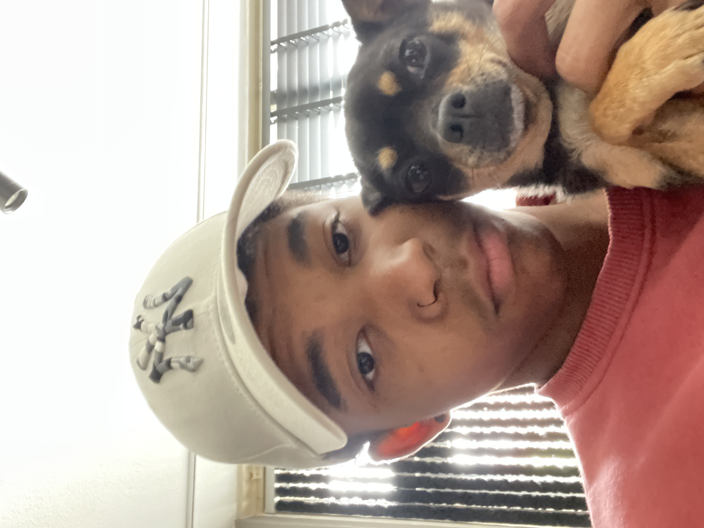

|

About me... |
In my spare time... I like to game a lot and produce music as well. I also skate at the local skatepark not as far from my house.
- Planet Coaster
- VRChat
- Cyberpunk 2077
- Gran Turismo 7
- Roblox
What i can already do As you might suspect i'm pretty familiar with English I think i'm good at producing music. I like solving problems, so i think i'm good at coming up with solutions as well. I am a very helpful person, because i like helping people. (At least that's what i think).
- Nasi (Food)
- Smiler (Favorite rollercoaster)
- Fox (favorite animal)
- Hoodie (Favorite attire)
- Beastars (Favorite anime)
- Phonk (Music genre)
- Purple (Favorite color)
- Youtube (I am not physically able to consume anything without).
- Bitter lemon (Favorite drink)
- Minecraft Creative mode (My favorite mode in the game)